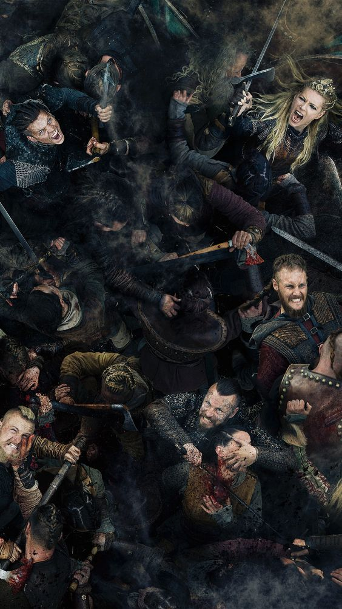

Fascinanții și violenții vikingi
Una dintre cele mai notorii perioade din istoria daneză este epoca vikingilor. A început în jurul anului 793 d.Hr. cu raidurile pe insula Lindisfarne, aflată în largul coastei de nord-est a Angliei.
Vikingii urmau să stabilească așezări în Yorkshire, în nordul Angliei și în Normandia, în partea de nord-vest a Franței.
Epoca Vikingilor a durat aproximativ 250 de ani. La un moment dat, Vikingul danez Svend I „Barbă despicată” (Svend Tveskæg) și fiul său Knut cel Mare (Knud den Store) erau regii nu numai ai Danemarcei, ci și ai Norvegiei, sudului Suediei, Groenlandei, Insulelor Feroe, Shetland, Orkney și părți din Anglia.
Vikingii au călătorit mult în afara tărâmului lor, navigând spre ceea ce astăzi sunt Rusia și Turcia.
Admirabilele lor abilități de navigație pe mare i-au adus și până în Groenlanda și America de Nord. Aceștia au continuat să jefuiască și să fure, împreună cu activități mai pașnice, cum ar fi comerțul cu metale prețioase, textile, articole din sticlă, bijuterii și blană.
Ocazional, au cumpărat și vândut și sclavi europeni.
Știați că?
Vikingii erau excelenți constructori de nave și marinari pricepuți. Navele de război construite cu finețe și măiestrie le-au oferit avantajul necesar pentru a cuceri pe mare.
Toporul de luptă. Pieptenele de păr. Barca lungă.
Vikingii din Danemarca, deși erau cunoscuți mai ales pentru cuceririle lor sângeroase, au fost, de asemenea, inovatori iscusiți. Ei au creat din materialele care le erau disponibile acum o mie de ani propria versiune a tehnologiei existente în alte părți, precum busola magnetică și cortul portabil.
